脑机接口十讲：详细复习笔记
依据十份原始课件整理，按实际讲授顺序解释概念、处理流程、实验和结论。第五讲逐篇介绍六篇论文；课件未展开的综述内容及原文补充均作说明。教学例子用于解释机制，不是新的实验结果。重复动画、讲师介绍和产品宣传简略处理；必要勘误放在对应段落。
全课程地图
| 讲次 | 实际课件主题 | 你要能回答的问题 |
|---|---|---|
| 1 | 脑机接口总览 | 从哪里得到脑信号，能用来做什么？ |
| 2 | 人工智能与机器学习入门 | 用什么学习方式，把什么输入变成什么输出？ |
| 3 | 信号处理基础 | 如何描述、采样、滤波和分析脑信号？ |
| 4 | 神经科学与脑机接口信号 | 神经元怎样传递信息，哪些活动可用于解码？ |
| 5 | 脑机接口中的进阶 AI | 如何解码文字、语音、图像，怎样应对跨天变化？ |
| 6 | fMRI、PET、fNIRS | 血氧、磁共振、示踪剂与神经活动有什么关系？ |
| 7 | EEG、MEG、ECoG 与微电极 | 电生理信号如何测量，各有什么局限？ |
| 8 | 论文阅读、写作与研究汇报 | 怎样从论文中提取问题、方法、证据与局限？ |
| 9 | 硬件、电路、TinyML | 微弱模拟信号如何进入计算机，模型如何放进设备？ |
| 10 | 未来方向与闭环自适应 | 怎样从实验室演示走向长期可靠使用？ |
注意：实际文件中第 8 讲是科研交流，第 9 讲是硬件；不要只按首页课程计划猜章节顺序。
贯穿十讲的流程：
神经活动 → 物理测量 → 模拟前端与数字采样 → 预处理 → 特征/表示 → 解码器 → 输出行动 → 用户获得反馈 → 用户与模型继续适应。
第 1 讲｜脑机接口总览
核心问题：我们能从脑中获得什么信息，又怎样把它变成外部设备能够使用的指令？
1.1 BCI/BMI 的基本含义
脑机接口建立脑活动与外部设备之间的通信通道。典型输出包括光标移动、文字、语音、假肢动作。反向通道可以通过刺激提供感觉反馈。完整系统可以同时包含解码与反馈。
- 解码：根据测到的信号估计意图、状态或刺激类别。
- 反馈：让用户看到、听到或感受到系统动作。
- 闭环：反馈会影响用户后续脑活动，新的信号再次进入系统。
不是所有脑成像实验都是完整 BCI；离线分析脑信号也不等于已实现实时脑控。课程还介绍外围神经接口和肌电相关接口，它们与严格意义上的“直接脑接口”应区分。
1.2 各类测量方式
| 技术 | 测到的量 | 位置/侵入性 | 主要优势 | 主要限制 |
|---|---|---|---|---|
| EEG | 头皮电极间的电位差 | 非侵入 | 时间精细、便携 | 伪迹、空间混合、源定位困难 |
| MEG | 神经电流产生的磁场 | 非侵入 | 时间精细，与 EEG 互补 | 环境磁噪声、设备和场地要求 |
| BOLD-fMRI | 与血氧相关的 MRI 信号变化 | 非侵入 | 空间定位较细、覆盖范围广 | 血流动力学延迟、设备限制 |
| fNIRS | 光吸收变化所反映的 HbO/HbR 变化 | 非侵入 | 可穿戴、适合部分自然场景 | 浅层敏感、头皮血流干扰、血流反应慢 |
| PET | 放射性示踪剂分布 | 需引入示踪剂 | 可研究特定代谢/分子过程 | 电离辐射、时间尺度、成本 |
| ECoG | 皮层表面电位 | 需手术 | 更接近信号源、较少颅骨影响 | 植入风险和覆盖范围限制 |
| 皮层内微电极 | 局部细胞外电活动 | 侵入 | 可获得尖峰和局部场电位 | 组织反应、稳定性、植入风险 |
时间分辨率回答“多快的变化能分辨”；空间分辨率回答“多近的来源能区分”。具体数值取决于设备、采样、分析与任务，不宜把一种技术固定成一个分辨率数字。
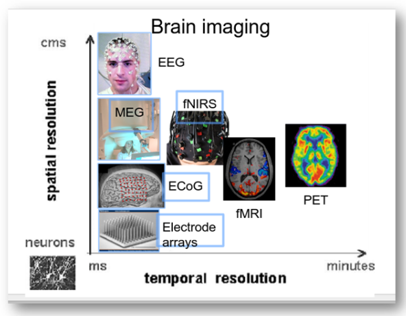
图 1｜各类脑接口的时空分辨能力。 来源：第 1 讲第 33 页；与你提供的“图片1”相同。保留课件原图，中文解释如下。
怎么看：先读坐标：横轴从左侧毫秒（ms）到右侧分钟（minutes），表示可分辨变化的时间尺度，越靠左越能跟踪快速变化。纵轴从下方神经元尺度到上方厘米（cms），表示空间尺度，越靠下越精细。因此左下方意味着时间与空间都较细，不能按“越高越好”理解。
说明什么：EEG 靠左但较靠上，适合观察快速变化，空间定位较粗；fMRI 更靠右且较靠下，空间区分较细，但受血流动力学时间尺度限制。微电极阵列靠近神经元，具有局部细尺度记录能力。
别误读：这是定性概念图，不是精确测量表，也没有展示费用、便携性、覆盖范围和侵入风险。不同设备与算法的位置会变化；不能凭图上图标大小推算精确分辨率或认定某技术全面最好。
1.3 神经接口中的取舍
更靠近神经组织通常能获得更局部、更强的信号，但也带来手术、长期组织反应与维护问题。非侵入不等于能精确读取每个神经元；侵入也不等于永不漂移。
课程中的神经袖套电极包绕外围神经；神经内电极进入神经束；RPNI 利用再生神经支配肌肉移植物，通过肌肉获得可记录信号。记录到的肌电不是头皮 EEG。
这一讲要会说：“选择测量方式时，需要同时考虑想解码的信息、时间要求、空间要求、使用场景与侵入程度。”
1.4 一个完整闭环实例：脑控光标
使用者尝试向右移动手，传感器记录相关活动，计算机从一小段数据中提取特征并预测光标速度，屏幕上的光标向右移动。用户看到光标偏离目标后改变控制策略，新的活动再次进入模型。这一循环中的每一步都可能引入错误或延迟。
如果仅在实验结束后用保存的数据预测方向，这是离线解码；如果预测实时驱动光标并影响后续行为，才形成对应的在线闭环。离线准确率高不保证在线体验好，因为用户反应、延迟和连续误差累积都加入了系统。
1.5 运动恢复与感觉反馈为什么要区分
运动解码回答“用户希望设备做什么”；感觉反馈回答“设备刚才碰到了什么、动作进行得怎样”。只有运动输出时，用户可能需要一直盯着机械手；若加入合适反馈，就可能更容易调整抓握。课程中恢复运动、恢复感觉和康复是不同应用，不宜全部概括为控制鼠标。
外围神经和 RPNI 的例子则说明：人体中不只有脑表面信号可作接口。RPNI 让外围神经重新支配肌肉移植物，利用肌肉活动获得较易记录的控制信号。它说明接口可以改变“在哪一层读取信息”，不是 EEG 放大器的另一种名字。
第 2 讲｜机器学习基础
核心问题：机器究竟在从什么数据中学习什么映射？
2.1 AI、机器学习、深度学习
AI 是更广的范围；机器学习通过数据学习规律；深度学习是使用多层神经网络的一类机器学习方法。大模型不是解决所有小数据问题的默认答案。
一次建模至少明确四件事：输入 X、目标 y、模型 f、训练损失 L。例如 EEG 运动想象分类：输入是一段多通道 EEG，目标是左手/右手标签，模型输出类别概率，训练时让预测接近标签。
2.2 不要把任务、训练方式、模型结构混成一层
| 维度 | 示例 | 回答的问题 |
|---|---|---|
| 任务 | 分类、回归、生成 | 最后想得到什么？ |
| 学习方式 | 监督、自监督、无监督、强化学习 | 学习信号从哪里来？ |
| 模型结构 | 线性模型、树、CNN、RNN、Transformer | 如何计算这个映射？ |
| 使用策略 | 迁移、微调、域适应 | 如何复用模型或适应新数据？ |
监督学习使用输入与目标的配对；不只是对数据集的一种处理，也不是某个特定模型的原理。同一种 CNN 可以用不同学习方式训练。
- 分类输出离散类别，如左手/右手。输出概率并不把它变成回归任务。
- 回归预测连续量，如光标速度、角度。判断依据是目标，不是算法名称。
- 聚类根据所选表示和相似性分组，分组本身没有自动获得“左手/右手”的意义。
- 自监督从数据自身构造训练目标，例如预测被遮住的片段；“没有人工标签”不等于“没有训练目标”。
- 强化学习通过行动、环境反馈与奖励学习策略；要考虑行动的长期后果。
课件中把房价示例标为分类，理解时应按连续价格目标归为回归。逻辑回归通常用于分类；SVM、随机森林等方法可有分类或回归版本。
2.3 训练、验证、测试
训练集用来更新参数；验证集用来选模型和超参数；测试集用于最终评估。反复看测试成绩并调整模型，会让它逐渐参与模型选择。
过拟合：模型对训练样本很好，对真正新数据变差。它可能利用了噪声、个人特征、记录日期或与标签偶然相关的伪迹。
应对办法包括合理数据划分、正则化、早停、更合适的模型容量和更多独立数据。不是训练准确率越高越好，也不是参数越多越好。
2.4 “构造空间，提高可分性”
一段 EEG 可以写成矩阵 X，模型把它变成向量 z=f(X)。向量的各维就是描述样本的新坐标。理想情况下，任务相同的样本更相近，任务不同的样本更好区分。
教学例子：原始波形很杂乱，改用“左侧运动区域某频段功率、右侧对应区域功率”作为两个坐标，可能更容易识别左右手运动想象。
分类边界是在空间里作判断；表示学习是在决定如何描述样本。 老师说的“构造空间”可以涉及手工特征、空间滤波或神经网络表示，不能仅凭这句话确定具体算法。
补充理解：PCA 保留方差较大的方向，不保证类别更好区分；监督表示学习可以利用标签强调任务差异。无论哪种方法，都要在未见数据上检验。
2.5 常见模型各自怎样做判断
线性模型对输入特征加权求和。假设两个特征分别是左侧和右侧某频段功率，模型可以学习它们差值是否与标签有关。决策树通过一连串条件分支判断；随机森林综合多棵树，降低对单棵树偶然规则的依赖。SVM 寻找有利于区分类别的边界，核方法可在更复杂的特征关系中作判断。
神经网络由多层可学习变换组成，训练通过损失衡量预测与目标差距，再用反向传播计算如何调整参数。反向传播是求参数梯度的机制，不是“大脑神经元真实学习方式”的直接证明。学习率控制每次更新幅度；太大可能不稳定，太小可能进展缓慢。
CNN 的卷积核在多个位置复用参数，可以学习局部模式；图像中是邻近像素，EEG 中可能是连续时间点或特定通道组合。RNN 保留状态处理顺序，因此把时间顺序打乱可能改变预测。同一个网络结构换训练目标，就可能完成不同任务。
2.6 损失下降、准确率上升和解释性不是同一件事
分类损失不仅关心猜对没有，还可能关心给真实类别的概率。两次预测都猜对，给真实类别 0.55 和 0.95 的训练损失可以不同。测试准确率相同的模型，也可能有不同置信度和不同失败方式。
课件用医学影像标注说明监督学习：专家先提供目标，模型学习模仿这套标注。标签中的偏差可能被继承；能预测标注不等于已经发现疾病机制。解释性则追问模型为何输出这个结果，不能把预测能力和机制理解混为一谈。
第 3 讲｜信号处理
核心问题：怎样把一串变化的数字变成可解释、可使用的信息？
3.1 信号与系统
信号是携带信息的函数。连续时间写 x(t)，离散时间写 x[n]。系统接受输入并产生输出，如滤波器把原始 EEG 转成滤波后的 EEG。
采样使时间离散；量化使幅值离散。两件事不同。离散时间信号在数学上不一定已经量化。
3.2 采样率、频率、点数
| 量 | 公式/含义 | 例子 |
|---|---|---|
| 信号频率 f | 每秒振荡次数 | 10 Hz 表示每秒 10 个周期 |
| 信号周期 T | T=1/f | 10 Hz 对应 0.1 秒 |
| 采样率 fs | 每秒记录次数 | 250 Hz 表示每秒 250 个样本 |
| 采样间隔 Δt | Δt=1/fs | 250 Hz 对应 4 ms |
| 样本数 N | 常规分段 N=fs×时长 | 250 Hz 记录 2 秒为 500 点/通道 |
8 通道、250 Hz、2 秒，一次试验通常为 8×500 的矩阵，含 4000 个标量数值。不是 4000 个独立受试者或独立试验。
3.3 混叠：把“快”误看成“慢”
想象用相机拍旋转的轮子，每次照片只看到一个角度；如果拍得不够快，就可能误以为轮子转得很慢，甚至反转。
数值例子：真实正弦信号是 9 Hz，却只以 10 Hz 采样。在这些采样时刻，其样本可以与一个方向相反的 1 Hz 正弦相同。只看采下来的点，不能唯一辨认原来的 9 Hz。
对理想带限信号，要无混叠重建，采样率需要超过最高频率的两倍；实际还应留出滤波过渡带余量。9 Hz 信号不能把“恰好 18 Hz”当作稳妥方案：恰好在零点采样等相位情况会丢失信息。
先限制进入采样系统的带宽，再采样。混叠已经发生后，普通数字低通无法知道某个低频成分究竟是真实低频还是折叠下来的高频。
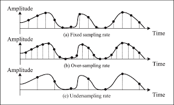
图 2｜采样点变稀时会丢失波形线索。 来源：第 3 讲第 48 页。保留课件原图，中文解释如下。
怎么看：三排都把连续波形与离散采样点放在一起，比较样本密度。黑点表示仪器实际保留的数值，点之间的连续曲线并不是仪器直接测到了无穷多个点。
说明什么：上、中排样本较密，能够保留更多变化信息；下排点数较少，仅凭这些点可能无法区分真实波形与其他变化方式。它对应前文车轮照片的比喻：每次只看一个瞬间，间隔太长会认错运动。
别误读：图用于解释欠采样，不是“点多就必定无混叠”的证明。仍需知道输入最高频率，并在采样前限制带宽；事后补点不等于找回原始信息。
3.4 时域、频域、时频域
- 时域：什么时候发生变化，峰值多大？
- 频域：有哪些频率，它们各有多强？傅里叶变换把信号表示为不同频率成分。
- 时频域：哪个时刻哪个频段增强？短时傅里叶变换生成的谱图是一种常用表示。
EEG 并非只有一种频率。整体傅里叶谱会弱化“何时发生”的信息；短时间窗提供更好的时间定位，却更难区分相近频率。粗略记忆：频率间隔约为 1/窗长；长窗有利于细分频率，但可能把时间变化混在一起。
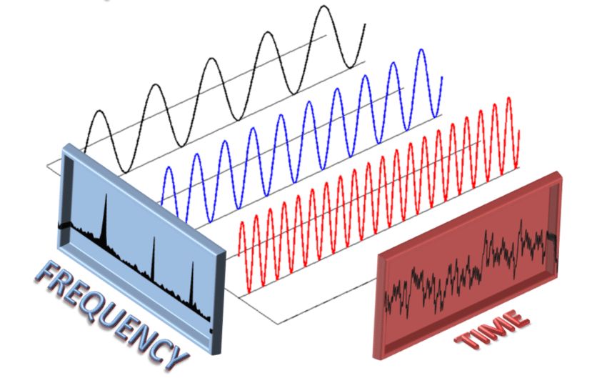
图 3｜同一信号的时域与频域视角。 来源：第 3 讲第 40 页。保留课件原图，中文解释如下。
怎么看：图中不同颜色的正弦波表示不同频率成分，右侧 TIME 展示它们叠加后的时间波形，左侧 FREQUENCY 展示对应的频率峰。它们是对同一信号的两种描述。
说明什么：时间波形看起来复杂，不意味着没有结构。把它分解后，可以分别研究哪些频率较强；反过来，把各频率成分按幅度和相位相加，可以描述原波形。
别误读：频谱不是大脑空间分布图，频率轴不代表电极位置；只有幅度谱还不包含重建一般波形所需的全部相位信息。
3.5 卷积和滤波
离散卷积：y[n]=Σk h[k]x[n−k]。可以先理解为用一组权重组合附近输入样本。例：y[n]=(x[n]+x[n−1]+x[n−2])/3，是只使用当前和过去样本的三点移动平均，能平滑快速变化，但也可能抹掉目标细节。
| 滤波方式 | 主要保留 | 典型用途与代价 |
|---|---|---|
| 低通 | 低频 | 抑制高频；可能损失快速变化 |
| 高通 | 高频 | 去慢漂移；可能改变慢成分 |
| 带通 | 指定频段 | 聚焦目标范围；不能保证去除所有伪迹 |
| 陷波 | 除狭窄频段外的成分 | 抑制 50/60 Hz 工频；也可能影响附近真实信号 |
滤波范围依据任务和采样条件选择，不存在所有 EEG 都通用的固定频段。眼动和肌电也可能与目标频率重叠。
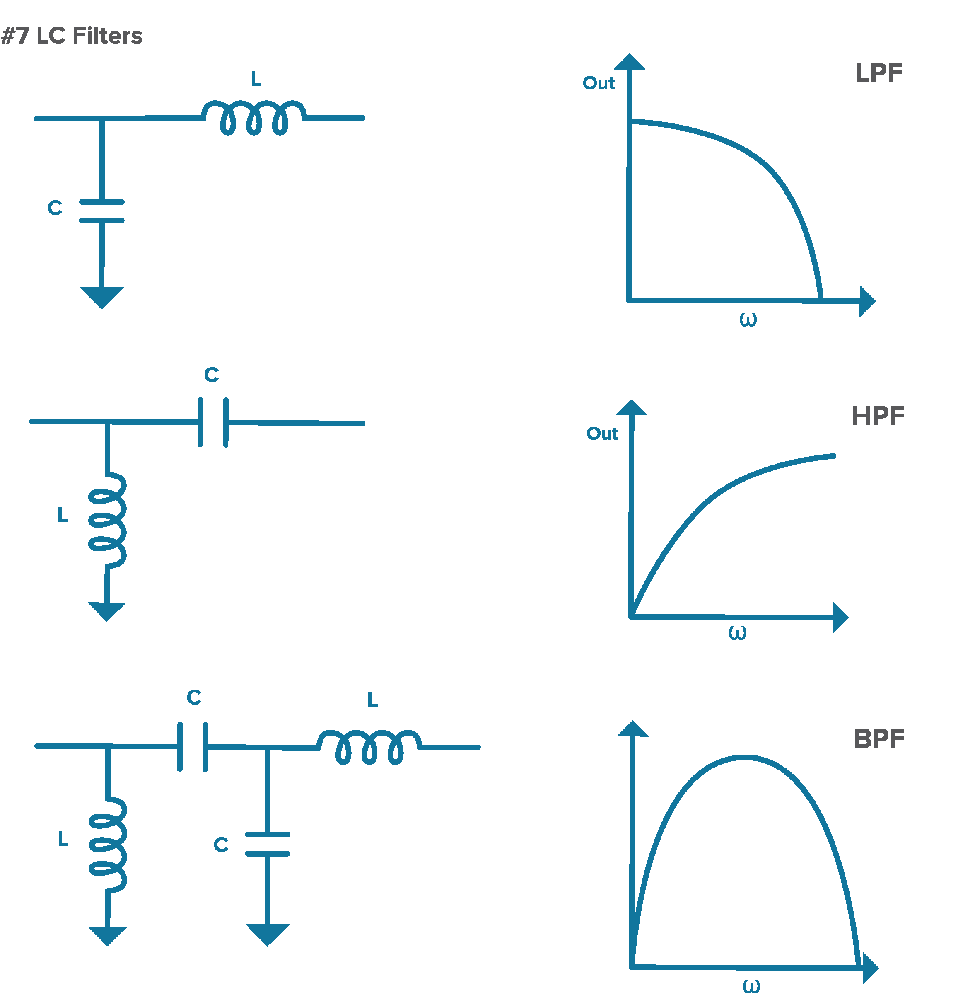
图 4｜低通、高通与带通的频率响应。 来源：第 3 讲第 38 页。保留课件原图，中文解释如下。
怎么看：看右侧曲线：横轴 ω 表示角频率，纵轴表示输出响应的示意强弱。LPF 在低频处通过较多，HPF 在高频处通过较多，BPF 主要通过中间一段。左侧是对应的电感、电容电路示例。
说明什么：这张图把“保留哪些频率”画出来：去缓慢漂移可考虑高通，抑制高频可考虑低通，聚焦某个频段可考虑带通。具体截止频率仍由任务决定。
别误读：这是响应形状示意，不是可直接照做的 EEG 安全采集电路。真实滤波器有过渡带与相位/延迟影响，边界不是理想的一刀切。
3.6 能量、功率、幅值
对 N 点有限记录：能量型统计量 E=Σ|x[n]|²，平均平方值 P=E/N。这里是信号分析中的定义，不能无条件说成焦耳或瓦特；物理单位还取决于测量量、时间间隔和电路条件。
若把幅值乘 3，则平方量乘 9。把“幅值三倍”说成“功率三倍”是常见错误。时间延迟 x(t−t0) 表示波形向后发生：t0>0 时向右移。
实时性补充：因果系统只使用当前和过去输入。离线零相位滤波可能用到未来样本，不能直接照搬成无延迟在线算法。
3.7 把卷积真正算一次
假设最近三个观测值依次是 3、6、12。采用三点平均滤波，当前输出是 (3+6+12)/3=7，而不是原来的 12。下一次新值到来后，窗口向前移动，最旧的值离开计算。这就是局部加权组合的一个例子。
它能压低快速跳动，也让突然变化不那么尖锐。若目标恰好是一个短暂峰值，平滑可能降低峰值，影响潜伏期或幅度判断。因此“曲线变好看”不等于信息更可靠；选择滤波器应依据任务。
3.8 傅里叶谱与谱图怎样对应 EEG
教学信号 x(t)=sin(2π×10t)+0.5sin(2π×20t) 由 10 Hz 和 20 Hz 两个成分组成。时域看到的是相加后的复杂波形；频域在相应频率附近看到成分。20 Hz 项系数是 0.5，表示其幅值为前者的一半，平方能量关系在同等条件下为四分之一。
若 10 Hz 只在前半段出现、20 Hz 只在后半段出现，整段频谱仍可能同时出现两个峰，却不能单靠它辨认先后。谱图对一个个短窗求频谱，把时间放在横轴、频率放在纵轴、强度用颜色表示。颜色单位可能是幅值、功率或对数功率，必须看图例。
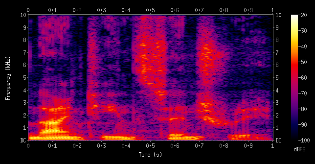
图 5｜谱图把频率变化放回时间轴。 来源：第 3 讲第 45 页。保留课件原图，中文解释如下。
怎么看：横轴是时间（秒），纵轴是频率，右侧色条标为 dBFS，颜色反映相对于数字满量程的频谱强弱。竖向结构提示短时间内跨较多频率的变化，横向亮带提示某段频率持续较强。
说明什么：整段傅里叶谱只能概括有哪些成分，谱图还帮助判断它们何时出现。这就是前文“前半段 10 Hz、后半段 20 Hz”例子所需的观察方式。
别误读：这幅课件图的频率单位是 kHz，是通用信号处理示例，不能把它直接当作 EEG 频段图，也不能凭颜色推断某种心理状态。
3.9 采样改变的究竟是什么
把同一段物理信号的采样率从 250 Hz 提到 500 Hz，记录点变密，但信号自身的 10 Hz 振荡没有变成 20 Hz。已经记录好的低采样率数据，通过插值变成更多点，也不会自动恢复原来未采到的高频信息。
降采样通常先低通以控制新奈奎斯特频率以上的成分，再减少样本；直接每隔若干点抽一个可能产生新的混叠。这也是为什么重采样不仅是改文件中的采样率数字。
第 4 讲｜神经科学基础
核心问题：信号背后发生了什么，哪些变化能够承载信息？
4.1 神经元与动作电位
树突接收输入，胞体整合，轴突传递信号，突触把影响传给下一个细胞。常见化学突触通过递质传递；不能由此认为所有突触都只有这一种形式。
动作电位大致经历去极化、复极化与恢复。达到阈值后呈“全或无”特征。对同一个神经元，不能把更大的动作电位幅度简单等同于更强的意图。
信息可以与放电率、尖峰时间、多个神经元的联合模式有关。例如 0.5 秒里出现 20 个尖峰，平均放电率为 20/0.5=40 次/秒；这不是说 EEG 一定有 40 Hz 振荡。
髓鞘与郎飞结有助于提高传导速度。但单个细胞尖峰、神经群体节律、任务事件反应属于不同观察尺度。
4.2 可塑性与共同适应
可塑性指神经系统随经验和活动改变连接或功能。LTP 指长期增强，LTD 指长期抑制。课件把 Long-Term Depression 标为 LTP，复习时应改为 LTD；具体诱导机制也不宜简化成“只要不相关放电就必然抑制”。
脑机接口成绩提高可能因为算法更新，也可能因为用户学会更稳定地控制脑活动。要区分两者，可以观察模型固定时的学习、记录校准变化、设置合适对照。
4.3 可用于 BCI 的活动
| 类型 | 含义 | 注意 |
|---|---|---|
| 条件学习/神经反馈 | 用户根据反馈学习调节活动 | 用户本身在学习 |
| 群体活动 | 多个神经元的联合模式反映任务变量 | 不能机械地一细胞对应一动作 |
| 运动想象 | 想象运动相关脑活动 | 不是实际肌肉运动，也要检查肌电干扰 |
| 事件相关反应 | 与刺激或内部事件有时间关系的响应 | 需要事件对齐与统计分析 |
4.4 ERP 与几个名字
ERP 是事件相关电位。常把多次试验按事件起点对齐后平均，以突出与事件一致的成分；这依赖噪声等成分能在平均中部分抵消，不意味着平均后只剩纯净目标信号。
| 成分 | 名字怎么读 | 常见关联，非唯一解释 |
|---|---|---|
| P300/P3 | 正向，约 300 ms | 任务相关目标、注意与情境更新 |
| N100/N1 | 负向，约 100 ms | 早期感觉加工 |
| N170 | 负向，约 170 ms | 常用于研究面孔加工 |
| N400 | 负向，约 400 ms | 常用于研究语义加工 |
这些数字是近似命名，潜伏期随任务和个体变化。正负依赖测量参考；绘图有时负向朝上。ERP 不是单个神经元动作电位，也不是“看到 P300 就知道具体想法”。
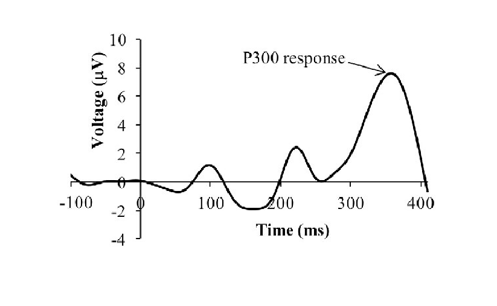
图 6｜P300：以事件起点对齐的电位变化。 来源：第 4 讲第 45 页。保留课件原图，中文解释如下。
怎么看：横轴是相对事件的时间（ms），0 表示事件起点；纵轴为电位（μV）。箭头标出约 300 ms 后的正向成分。先找 0 点再读峰的时间，不能把 300 ms 当作整段记录的绝对时钟。
说明什么：P 表示正向，300 是近似潜伏期命名。这类事件对齐波形帮助研究注意和目标检测，与单神经元尖峰在尺度和测量机制上不同。
别误读：峰不保证每次恰在 300 ms，也不能由这幅示意曲线推断单次试验一定干净可见。实际波形受参考、任务与平均方法影响。
4.5 单细胞放电怎样联系到群体信号
单个细胞膜两侧存在电位差，跨膜电流和突触活动在周围组织中产生可测电场。头皮电极距离远，多个来源经组织传播叠加，因此记录的主要是群体层面的电位差，不是把每个细胞动作电位按顺序拼起来。
两个条件的平均 EEG 不同，可能来自参与细胞的数量、同步程度、时序或来源方向变化；不能由一个波峰直接反推“有多少个神经元一起放电”。这解释了为什么微观动作电位和宏观 EEG 需要不同模型描述。
4.6 事件相关平均为什么能突出成分
将每次目标出现的时刻定义为 0，把随后波形对齐。如果某个反应经常出现在事件后约 300 ms，它会在平均后保留；与事件无关、方向不固定的波动可能部分抵消。若各试次反应时刻差很多，平均也可能把真实反应摊平。
教学中的目标检测任务可让少数目标混在频繁非目标里，比较两类事件的平均响应。P300 相关差异可以用于推断用户关注哪个目标，但分析应考虑刺激概率、注意和任务条件。它不是“300 ms 后必定出现同一个正峰”。
4.7 群体编码与脑区功能
课件介绍运动皮层神经元与运动方向等变量有关。一个神经元可以对多个方向有不同响应强度，多个神经元组合才构成更有用的估计。脑区分工也是相对的：运动、感觉、语言涉及分布式系统，不能把一幅功能分区图当成严格隔离的电路板。
第 5 讲｜进阶 AI：六篇论文逐篇理解
这一讲的主线是：神经时间序列怎样变成文字、语音和图像；当任务变成情绪识别或跨天使用时，怎样定义目标、选择特征和处理分布变化。课件第 3–12 页先介绍学习方式，第 13–63 页共涉及下面六篇论文，其中两篇是综述，不应给它们硬套一个“实验准确率”。
| 论文 | 年份、类型 | 信号与目标 | 课件位置 |
|---|---|---|---|
| High-performance brain-to-text communication via handwriting | 2021，实验 | 皮层内信号 → 手写字符/文字 | 13–32 页 |
| A high-performance neuroprosthesis for speech decoding and avatar control | 2023，实验 | ECoG → 文字、声音、虚拟人 | 33–43 页 |
| Image classification and reconstruction from low-density EEG | 2024，实验 | 头皮 EEG → 图像类别与重建图像 | 44–53 页 |
| Role of machine learning and deep learning techniques in EEG-based BCI emotion recognition system: a review | 2024，综述 | EEG 情绪识别方法体系 | 54 页 |
| Using adversarial networks to extend brain computer interface decoding accuracy over time | 2023，实验方法 | 皮层内信号跨天对齐 → 稳定运动解码 | 55–61 页 |
| Machine learning techniques for electroencephalogram based brain-computer interface: A systematic literature review | 2023，综述 | 主要围绕运动想象 EEG 的处理与分类 | 62–63 页 |
5.1 读六篇论文之前：模型在流程中的位置
编码器把原始神经数据转换成特征 z=f(X)；解码器利用这些特征预测目标；生成模型把条件信息转换成符合图像或语音规律的输出。在不同论文中，同一个名称可能承担不同职责，先看输入输出，再看名字。
CNN 在时间窗口或通道组合上提取局部模式。RNN 把当前输入和过去状态一起处理，适合连续字符、语音或运动序列；GRU/LSTM 用门控机制控制哪些信息保留。注意力根据内容决定如何组合不同位置的信息，不等于生理意义上的注意。
无监督学习寻找数据结构；自监督学习从数据本身构造目标，例如遮住一段信号再预测。生成式学习关注数据分布，GAN 通过生成器与判别器相互训练，扩散模型学习逐步去噪。GAN、扩散模型和语言模型不是同一类模块，也不是所有论文都会同时使用。
“双向”序列模型能够利用一段序列前后的上下文。它可以在收完一段后迅速输出，但这不等于逐采样点零等待的因果解码。“实时”必须结合输出延迟和所需数据窗口理解。
5.2 论文一：通过尝试手写实现脑到文字通信
题目：High-performance brain-to-text communication via handwriting。Willett 等，Nature，2021。原论文。以下实验流程和数字主要对应课件第 13–32 页，论文链接用于回查。
要解决的问题。 传统脑控输入常让用户先移动光标，再点字母。作者考虑：一个人虽然无法真的写字，尝试写不同字母时，运动皮层中是否仍保留不同的时间活动模式？如果直接识别这些模式，就可能绕过逐个移动光标的过程。
受试者与记录。 核心实验来自一名四肢瘫痪参与者 T5，在运动皮层手部相关区域植入两块微电极阵列。记录的是皮层内神经群体活动，不是头皮 EEG。参与者根据提示尝试写单字符和句子，训练标签来自被要求写的内容。
从输入到输出。 各通道阈值交叉事件按 20 ms 窗口统计并平滑，构成随时间变化的神经特征。两层 GRU RNN 将特征序列转换成字符概率及新字符开始的概率，再由规则产生在线文字。课件说明解码器采用约 1 秒输出延迟，以观察字符的时间过程。
尝试手写 → 多通道放电特征序列 → GRU → 字符概率＋字符起始信号 → 在线字符；另一路将概率送入语言模型，得到回顾性纠错结果。
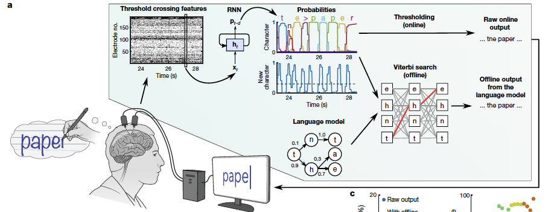
图 7｜手写论文：直接解码与语言纠错分支。 来源：第 5 讲第 20 页，Willett 等（2021）。保留课件原图，中文解释如下。
怎么看：从左到右跟箭头：尝试写字形成多通道神经特征，RNN 输出字符概率；上路经阈值等处理得到在线字符，下路结合语言模型进行搜索，得到回顾性文字结果。
说明什么：图直接解释为什么必须分开报告“原始在线”与“语言纠错后”的成绩：后者额外使用了语言规律。RNN 输出的是一串随时间变化的概率，不是一次只看到一个电压就吐出完整句子。
别误读：脑内记录来自植入微电极，不是 EEG。图中不同输出分支的测试条件不同，不能把它们的速度、错误率任意拼接成一个成绩。
为什么不是逐帧分类。 写一个字母是一个过程：起笔、转向、收笔可能产生不同模式。同一字母每次写得快慢不同，如果只比较同一绝对时刻的数值，就可能误把速度差当成类别差。课件展示了时间扭曲对齐：把过程进度对齐后，同一字母的活动轨迹更一致。这里的对齐用于分析或训练相关处理，不能理解为在线时预先知道测试字母。
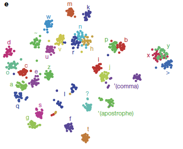
图 8｜手写论文：字符相关神经表示的 t-SNE 图。 来源：第 5 讲第 24 页，Willett 等（2021）。保留课件原图，中文解释如下。
怎么看：每个点是一条试验的二维可视化表示，不同颜色和旁边字符标明对应任务。某些字符各自成团，另一些位置接近或重叠。二维坐标本身没有“电压”或“神经元位置”的物理单位。
说明什么：它支持观察同一字符试验之间存在一定一致性、不同字符可能有可分结构。这与“构造表示空间”有关，但真正的解码性能仍应看独立测试。
别误读：t-SNE 会改变高维距离关系；不能把图上两团的绝对远近当作精确神经相似度，更不能由一张散点图证明跨天或跨人泛化。
训练困难与处理。 瘫痪的手不能提供真实笔迹来标出每个字符精确边界，而且神经数据量有限。课件介绍单字母、句子数据和合成句子共同参与训练，并在未用于训练的句子上测试。测试前仍涉及每日校准；“模型在测试期间固定”不等于“连续很多天从不更新”。
图怎样看。 PCA 图显示若干主成分随时间的轨迹；t-SNE 图把一次试验映射成一个点，用颜色标识字符类别。它们帮助观察字符相关结构，但不能证明每个字符都有固定、完全相同的神经图案。课件的二维笔尖轨迹来自另一项线性解码及跨试验平均分析，不能误认为整个在线打字系统必须先画出笔迹才能识别字母。
主要结果。 课件报告约 90 字符/分钟、94.1% 原始在线准确率；加入语言模型/自动纠错后的回顾性结果超过 99%。字符错误率包含替换、删除和插入，不能直接与普通试次分类准确率等同。
创新在哪里。 重要贡献不仅是采用 RNN，还在于选择了具有丰富时间结构的控制任务。课件比较手写字符和简单直线运动：两者空间维度相近，但字符的时间维度更丰富，类别间更容易拉开距离。复杂动作未必更难解码；它有时提供更多可区分线索。
结论边界。 单名参与者、植入记录、特定字符与任务条件，不证明所有人或 EEG 都能达到同样成绩。语言模型后的高准确率是完整系统成绩；94.1% 和超过 99% 对应不同处理条件，都应说明。不能把后者全部归为神经信号直接提供的信息。
与“构造空间”的联系。 不必只把一个时刻的通道值当坐标。可以把整段轨迹的时间结构纳入表示，使不同字符更容易区分；目标是保留类别相关变化，同时容忍书写速度等无关变化。
5.3 论文二：语音解码与虚拟人控制
题目：A high-performance neuroprosthesis for speech decoding and avatar control。Metzger 等，Nature，2023。原论文。课件第 33–43 页介绍此研究。
要解决的问题。 沟通不仅需要文字，还需要声音、口型和表情。研究目标是在无法正常说话的参与者尝试发音时，从皮层记录中恢复多个沟通通道，而不只是显示一个类别标签。
受试者与输入。 课件介绍一名瘫痪参与者，植入 253 通道高密度 ECoG 阵列覆盖言语相关皮层，在尝试说句子时记录信号。ECoG 是皮层表面群体电活动，既不同于头皮 EEG，也不同于单神经元记录。
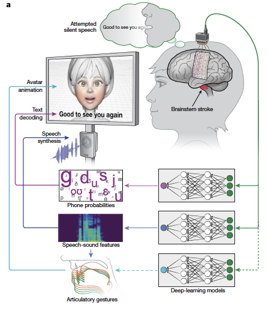
图 9｜语音论文：文字、声音与虚拟人三条输出路线。 来源：第 5 讲第 35 页，Metzger 等（2023）。保留课件原图，中文解释如下。
怎么看：从右上脑表面阵列向下看神经信号，再分别沿路线读到音素概率、语音声学特征和发音动作表示；左侧分别呈现文字、声音和虚拟人的可见输出。
说明什么：同一次尝试发音可以服务于多个输出，但各分支预测的中间变量不同。这使系统不仅传递文字内容，还能呈现声音与面部动作。
别误读：三条路线共享任务不意味着三个输出的误差相同。文字准确率不能代替声音可懂度或口型同步指标；图中阵列是 ECoG。
三个输出分支。
| 分支 | 课件中的处理链 | 要区分的目标 |
|---|---|---|
| 文字 | ECoG 特征 → 序列模型 → 音素概率 → 词典/语言模型 → 句子 | 内容是否正确、输入速度 |
| 声音 | ECoG 特征 → 离散语音单元 → 声学表示 → 声码器 → 音频 | 可懂度、音质、音色 |
| 虚拟人 | 神经活动或解码出的中间表示 → 发音/面部动作表示 → 动画 | 口型、表情、时间同步 |
音素与文字对齐。 音素可以理解为发音的基本单位，不是完整单词。神经序列可能很长，但目标句子短，且不知道每个音素在哪一帧出现。课件提到 CTC：训练时把多种可能的时间对齐路径合并考虑，避免要求人工逐帧标注。CTC 不是语言模型；词典和语言模型随后约束候选词序列。
语言模块分工。 课件列出 WFST、4-gram 语言模型与 RNN 重评分。WFST 将发音、词典及语言约束组织为可搜索结构；重评分在候选句子间进一步选择。这些模块能减少语言上不合理的输出，但也意味着最终文本受先验影响，不能把每个字都说成独立从皮层读出。
声音分支如何训练。 课件描述用预训练 HuBERT 从示例语音波形提取离散语音单元，将其作为神经解码的目标；预测单元再变成声学表示，经声码器生成声音。参与者不能正常发声时，训练目标的来源和时间对齐尤其重要。个性化声音由额外的声音转换处理获得；音色相似不是神经信号直接编码了原始声波的证据。
虚拟人分支如何理解。 课件介绍用量化的发音动作表示和解码网络恢复平滑轨迹，再驱动动画。VQ-VAE 把连续模式压缩为有限码本中的代表，解码器再从代表恢复动作。理解重点是“先预测便于学习的中间单元，再转为可见动作”，而不是把每个神经通道直接接到一个面部肌肉。
主要结果与边界。 课件报告约 78 词/分钟、约 25% 词错误率，并展示语音与虚拟人输出。数字说明沟通潜力，也说明仍有明显错误；不应概括为“已经无误地恢复自然说话”。文字、声音、表情各有不同评估，不能用一个文本指标替代其他分支。课件对“大词表”和“实时”描述较概括，引用时需回到原文具体实验条件，尤其不能推出无限词汇、零延迟、长期免校准。
与老师音画任务的联系。 这篇展示了把相关输出组织为中间表示的价值。声音与口型都由一次发音行为产生，可围绕共同内容和时间对齐建模；但它不是任意音频与任意画面同步生成的通用证明。
5.4 论文三：低密度 EEG 图像分类与重建
题目：Image classification and reconstruction from low-density EEG。Guenther、Kosmyna、Maes，Scientific Reports，2024。原论文。课件第 44–53 页；以下以我们此前核对的原文为准，修正课件概括。
问题。 使用少量、较便携的头皮电极，能否从观看图像诱发的活动中识别类别，并进一步为生成模型提供有用条件？这里研究视觉感知，不是自由想象，也不是读取人的完整内心画面。
参与者与实验。 招募 9 人，排除 1 人，8 人用于主要分类分析。基础刺激含 600 张图片，20 类、每类 30 张；每张显示 2 秒，其后 1 秒灰屏。使用 8 个枕部/顶枕部通道，以 250 Hz 记录，因此单试次输入是 8×500。不同记录场次用于训练、验证和测试，按参与者分别建模。
预处理。 原文包含坏试次检查、1 Hz 高通、95 Hz 低通、60 Hz 陷波、逐通道标准化和异常值限幅；滤波先于试次切分。课件所述 0.1–45 Hz、统一时频/小波特征和某些架构名称，不能作为本文实际流程照抄。
第一阶段：分类。 比较 EEGNet、TSCeption、EEG-ChannelNet、EEG Conformer 等模型。任务是根据 EEG 判定图片属于哪个类别，20 类均匀随机猜测水平为 5%。EEGNet 是紧凑 CNN，学习时间与通道组合模式，不要求预先把所有输入变成手工频谱特征。
第二阶段：获得表示。 以表现较好的 EEGNet 为基础修改分类头，加入 512 维嵌入层并进行分类训练，随后移除最终分类层，留下 EEG 编码器。512 是学习到的特征维度，不是电极数，也不能直接把某一维命名成“猫神经元”。
第三阶段：有条件生成。 EEG 嵌入经投影送进预训练潜在扩散模型。论文中的“双重条件”是同一 EEG 表示作用于交叉注意力路径和扩散时间步嵌入路径。扩散时间步是逐步去噪的步骤，不是 EEG 的采样点。训练调整 EEG 编码器、投影器和指定注意力模块，而非从零训练完整图像世界知识。
EEG → EEGNet 编码器 → 512 维表示 → 两条条件路径 → 潜在扩散去噪 → 重建图像。
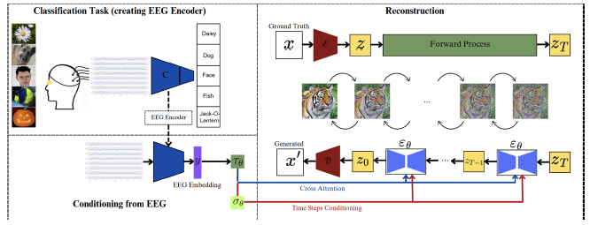
图 10｜图像论文：分类表示如何进入扩散模型。 来源：第 5 讲第 49 页，Guenther 等（2024）。保留课件原图，中文解释如下。
怎么看：左侧先用图像类别训练 EEG 编码器，下面是 EEG 嵌入；右侧是生成模型流程。沿下方两条条件路径看，EEG 表示分别进入交叉注意力与扩散时间步条件。GT 表示训练时的真实图像。
说明什么：分类训练让嵌入保留有用类别线索，生成阶段利用该嵌入约束图像去噪。图中的双路径对应同一个 EEG 表示的两种注入方式。
别误读：不能因训练图中出现真实图像/标签，就认为推理时也给模型真实答案。这里的“双重条件”不是 EEG 加真实类别标签；扩散步骤也不是 EEG 时间点。
这与课件哪里不同。 不是“EEG＋真实类别标签”两种输入；不是以 EEG–CLIP 对比对齐作为本文核心；也不能声称已经证明稳健跨受试者迁移。类别标签用于分类训练，与测试时额外向生成器告知真实类别是不同事情。
结果要分开读。
| 数字 | 真正对应的条件 |
|---|---|
| 34.4% | 20 类 EEG 分类，各参与者测试成绩的平均 |
| 35.3% | 基础集重建，在 50 类 top-1 图像评估中使用每试次五次生成里的最佳样本 |
| 30.9% | 基础集五次生成的平均结果 |
| 8.2% | 未见类别的最佳样本重建评估；远低于基础集 |
50 类 top-1 是重建评估协议，不等于记录时基础刺激有 50 类；35.3% 不是像素还原比例。主要重建实验使用表现最好的参与者，不能把它当作 8 人普遍达到的生成质量。
对照与局限。 使用试次间 EEG 等控制条件时，成绩明显下降，支持正确神经输入确实贡献了信息。但重建细节还来自生成模型先验；眼前这张猫图的耳朵、纹理与背景未必都被 EEG 编码器还原。已见类别较好、未见类别明显下降，提示结论应限定在具体刺激分布和测试条件内。
对“构造空间”的启发。 先利用分类任务训练出能区分类别的表示，再将它用于生成，是一种任务驱动表示学习。不过“适合分类”不必然“保留像素细节”，所以生成目标与表示训练目标需要分别检查。
5.5 论文四：EEG 情绪识别综述
题目：Role of machine learning and deep learning techniques in EEG-based BCI emotion recognition system: a review。Priyadarsini Samal、Mohammad Farukh Hashmi，Artificial Intelligence Review，2024。原文。课件第 54 页主要是一张论文首页；以下为原文补充与学习解释。
综述的工作。 它梳理情绪表示、诱发方式、数据集、特征提取/选择和 ML/DL 分类流程，比较已有研究，而不是招募一组新被试来证明某一个模型最好。原文报告筛选后纳入 209 篇文献。阅读价值是了解问题有哪些定义和处理路线；不能为它编造统一的被试数或单一准确率。
原文中的情绪表示。 离散表示把情绪分成类别；维度表示常使用 valence（愉悦程度）与 arousal（唤醒程度），也可加入 dominance（控制感）。研究还需说明采用什么刺激和标签。不同定义、数据集与评估协议下的成绩，不能直接排列成同一排行榜。
方法脉络。 综述沿采集、预处理、特征处理、分类与评估组织文献，并讨论跨个体差异和实际应用挑战。本文的贡献是整理，而非提出一个所有场景通用的最佳网络。
补充理解例子，不是本文新实验。 看一段刺激视频时，EEG 是输入，但视频被研究者归为“悲伤”不保证每个参与者都悲伤。若使用个人评分生成标签，需要说明阈值和评分时间。把同一段视频的很多相邻窗口随机分开，模型可能识别视频、被试或记录状态，而非泛化的情绪线索。
如何读这类结果。 先确定是情绪类别分类，还是连续评分预测；再确定测试人是否见过、同一刺激是否重复出现、标签是否来自本人报告。之后才讨论特征或模型。这个检查顺序比记住一个高准确率更重要。
5.6 论文五：对抗网络延长解码器的有效使用时间
题目：Using adversarial networks to extend brain computer interface decoding accuracy over time。Xuan Ma、Fabio Rizzoglio 等，eLife，2023。原文，作者实验室全文。课件第 55–61 页。
问题。 第 0 天的神经活动与运动目标能很好对应，若干天后记录的活动却改变，旧解码器随之退化。与其每天更换解码器，能否先转换新一天输入，让它仍适用于旧模型？这里研究皮层内运动记录，不能默认替换成 EEG。
数据与目标。 课件及原文涉及多只猴、多种运动任务，输入是神经群体放电特征，目标包括肌电或运动学量。95 天是课件用于说明长期变化的一段数据跨度，不是“95 名参与者”。具体实验按动物和任务分别评估，不是把它们混成一个左右手分类数据集。
共同流程。 首先用第 0 天有标签数据训练 Wiener 解码器并固定；第 k 天收集无标签神经数据，用对齐器转换后送入旧解码器。Wiener 解码器根据神经信号及时间关系估计连续输出，因此 R² 是回归评价，不能读成分类准确率。
第 k 天神经特征 → 学习到的对齐器 → 接近第 0 天表示 → 固定的原解码器 → 肌电/运动预测。
比较的方法。
| 方法 | 课件中的主要区别 |
|---|---|
| PAF | 使用因子分析得到低维空间，再作 Procrustes 对齐，属于较受约束的线性几何调整 |
| ADAN | 利用自编码器相关的低维结构进行对抗域适应；原文实现不只是简单地让两个散点图重合 |
| Cycle-GAN | 对全维神经记录学习双向映射，加入循环一致性约束 |
循环一致性怎么理解。 设 G 把新一天变到旧一天，F 把旧一天变回新一天，希望 F(G(x)) 接近 x。对抗目标要求转换后的数据像目标域；循环目标要求往返转换尽量保留输入信息。这样可以约束任意乱映射，但不能在数学上自动保证每个行为类别一定正确对应。
为什么强调无监督。 第 k 天对齐训练不需要逐点的动作标签，不等于整个系统没有标签：第 0 天解码器训练仍用监督；研究者评价预测好坏时也需要真实行为作为参照。
结果。 课件给出的同日基线 R² 约 0.71–0.73；跨天不对齐会退化，两种对抗方法总体优于所比较的 PAF，Cycle-GAN 在长期和连续数据场景中更稳健，且对调参相对不敏感。对齐结果仍不等同于完全重新校准后的最佳表现，不能概括为永久免校准。
现实边界。 这类方法依赖新旧数据存在可利用的对应关系。若用户换了策略或行为分布大变，机械地把新数据拉回旧分布可能损伤任务信息。网络推理具有因果潜力，也不等于这项研究已经证明多年日常闭环使用无需维护。
与老师建议最直接的连接。 “构造空间”既可以为了让不同任务更分离，也可以为了让同一任务在不同日期更一致。两种目标最好同时考虑：任务相关差异保留，记录条件造成的无关差异减少。
5.7 论文六：EEG 脑机接口机器学习方法系统综述
题目：Machine learning techniques for electroencephalogram based brain-computer interface: A systematic literature review。Pawan、Rohtash Dhiman，Measurement: Sensors，2023。原文。课件第 62–63 页。
综述范围。 原文总结超过 220 篇相关论文，主要围绕运动想象 EEG 的采集、预处理、特征提取和分类，并讨论小波及小波包等时频方法。它提供方法地图，而非在同一数据划分上重新训练全部方法的统一竞赛。
课件饼图怎么读。 第 63 页显示其统计中 SVM 占 30%、KNN 占 18%，时频特征占 45%、频域占 25% 等。它们表示方法在统计中的占比，不是 SVM 准确率 30%，也不是时频分析能识别 45% 的意图。图中方法出现得多也不代表它对你的任务一定最好。
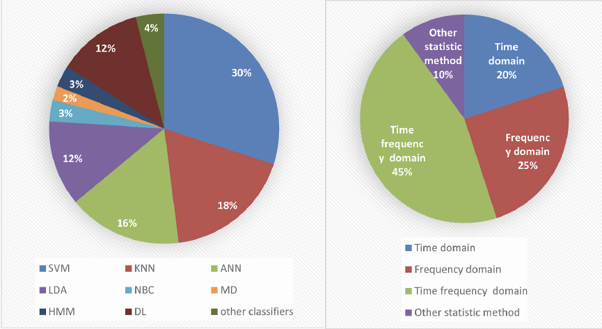
图 11｜运动想象综述：方法占比，而非准确率。 来源：第 5 讲第 63 页，Pawan 与 Dhiman（2023）。保留课件原图，中文解释如下。
怎么看：左图图例是分类方法，右图图例是特征域。SVM 的 30%、时频域的 45% 等是综述统计中的使用占比，不是模型正确率。先确认分母是什么，再读数字大小。
说明什么：图展示研究者采用哪些路线较多：特征提取和分类器是两个不同选择层面，不能把右图的时频方法与左图的 SVM 当成互斥方案。
别误读：某方法使用多不意味着它效果一定最好；统计受文献筛选与发表时间影响，也不是当前整个领域的实时份额。
把方法放回流程。 时域统计描述波形幅度和变化；频域描述不同频率能量；时频方法描述某个频率在什么时候出现。分类器随后根据特征作决策。这两步可以分开设计，也可以由神经网络联合学习。
补充理解例子。 对左/右手运动想象，可先比较两侧运动相关通道的频段变化，再构造空间滤波后的方差特征，最后输入 LDA 或 SVM。CSP 的基本目标是寻找通道加权组合，使两类的方差差异更明显；它是一个具体的“构造表示空间”的例子，但不是该综述独创的新算法。
结果与局限。 不同研究的数据、类别数量、窗口和跨人协议不同，表中某项高准确率不能直接说明对应方法胜过所有其他方法。用综述找到候选路线后，应回到具体原始实验检查比较是否公平。
5.8 六篇论文连起来看
| 研究 | 真正改变了什么 | 不能偷换成什么结论 |
|---|---|---|
| 尝试手写 | 用丰富时间结构提高字符可分性 | 头皮 EEG 可以同样高速打字 |
| 语音与虚拟人 | 神经活动经不同中间表示生成多种沟通输出 | 一项文本成绩证明全部音画细节正确 |
| EEG 图像 | 分类表示为生成模型提供条件 | 像素细节全部来自 EEG、已实现自由想象读出 |
| 情绪综述 | 整理任务定义、数据、特征与分类路线 | EEG 是无需标签验证的客观读心仪 |
| 跨天对齐 | 变换输入以复用固定解码器 | 所有神经漂移都已解决 |
| MI 方法综述 | 梳理不同处理模块及使用情况 | 出现最多的方法在所有任务上最佳 |
本章最重要的联系是：输入表示必须服务于明确的任务和测试条件。 能区分当前数据、能迁移到新一天、能控制生成内容，是三个相关但不同的要求。
第 6 讲｜fMRI、PET 与 fNIRS
核心问题：这些方法通过什么中间环节反映神经活动？
6.1 MRI 为什么有信号
常规 MRI 主要利用氢核：主磁场产生净磁化，射频脉冲激发，接收线圈测量随后变化的磁共振信号；梯度帮助编码空间位置，重建得到图像。
拉莫尔频率与磁场强度成正比。课件中的 k 空间是 MRI 采集的空间频率域，不是“脑区坐标图”。采样间隔影响视野，采集到的空间频率范围影响可分辨细节。
即使血氧不变化，MRI 仍然可以有信号和图像。 BOLD-fMRI 关心的是其中与血氧相关的信号变化。
6.2 BOLD 因果链
神经活动变化 → 血流与氧代谢变化 → 脱氧血红蛋白比例等发生变化 → 局部磁环境与 T2* 加权信号改变 → 统计分析得到任务相关结果。
这不是 MEG 式的“直接接收神经电流磁场”。也不能简化为一个直接的血氧浓度计：BOLD 受到血流、血容量、氧代谢等共同影响。
血流动力学反应通常比神经活动慢，峰值在数秒尺度。采集图像更频繁可以更密集地观察这个慢响应，却不会让血管反应本身变快。
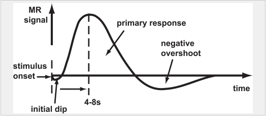
图 12｜血流动力学响应：神经事件之后的慢变化。 来源：第 6 讲第 35 页。保留课件原图，中文解释如下。
怎么看：横轴是时间，纵轴是 MR 信号示意；stimulus onset 标出刺激起点，曲线随后才出现主响应，图上以约 4–8 秒标示峰值尺度，之后可能出现下冲。
说明什么：这解释了为什么神经活动早已发生，BOLD 却稍后变化。提高采集频率只会更密集地观察这条响应曲线，不会让血流响应自动变得和电信号一样快。
别误读：初始下降和后续下冲不是每个任务、每个脑区都能稳定看到；图是典型形状示意，不能把它当作所有人的固定生理时钟。
6.3 激活图与实验设计
彩色区域通常表示某种统计量达到显示阈值，不是大脑真的发出对应颜色，也不是彩图之外的神经元没工作。
- 区块设计：同类条件连续出现一段时间，便于形成稳定对比。
- 事件相关设计：建模单个事件及其血流响应，可能出现响应重叠。
- 简化模型：预测 BOLD ≈ 事件序列与血流动力学响应函数 HRF 的卷积。
常见处理包括运动校正、空间标准化、平滑和时间处理。头动若与任务同步，可能制造假相关。标准化到共同空间也不能消除所有个体差异。
统计勘误：课件把 p 值近似说成“错误拒绝原假设的概率”不够准确。p 值是在原假设及模型假设成立时，观察到当前或更极端统计结果的概率；不是原假设为真的概率，也不是本次结论出错的概率。多体素检验还需考虑多重比较。
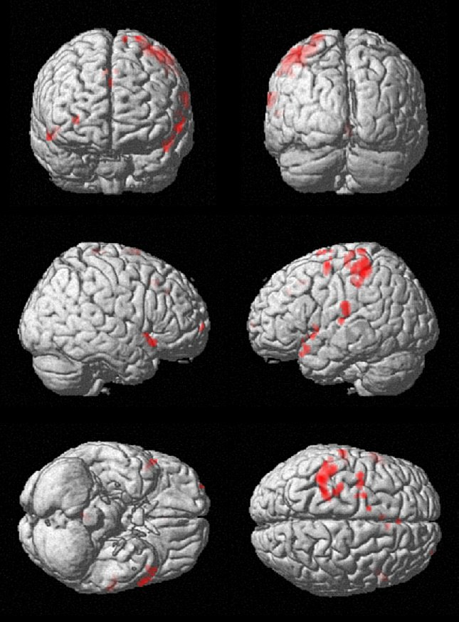
图 13｜fMRI 彩色激活区是分析结果的显示。 来源：第 6 讲第 49 页。保留课件原图，中文解释如下。
怎么看：灰色是解剖背景，红色区域是叠加显示的分析结果；多个脑表面视角用于帮助定位。这里没有可供读取具体数值的色条，因此不根据颜色深浅推断精确效应。
说明什么：激活图通常来自条件对比、统计模型和显示阈值。它表达特定分析下哪里达到相应标准，而不是直接拍到了神经元发红。
别误读：无颜色不等于没有活动，有颜色也不自动证明该区域专门或唯一负责这项功能；头动与其他混杂同样需要排查。
6.4 静息态
静息态通常指没有指定的显式任务，不是没有神经活动，也不只是身体静止。可以分析不同区域信号的统计联系；相关性本身不证明直接因果连接。
6.5 PET
选择示踪剂 → 在体内分布 → 放射性核素发生正电子衰变 → 正电子与电子湮灭 → 探测符合事件 → 重建示踪剂分布。
“用了哪种放射性元素”还不够，需要知道核素标记了什么分子，以及该示踪剂反映什么过程。例如 FDG 用于研究葡萄糖代谢相关过程；不同示踪剂可研究不同靶点。不能把全部 PET 都叫作血氧成像。
6.6 fNIRS
近红外光进入组织，探测器记录经过组织后的光强；利用不同波长的吸收差异估计氧合/脱氧血红蛋白变化。光源和探测器称为 optodes。
它受浅层组织、头皮血流、头发与运动影响，覆盖和深度有限。不要记成“与 fMRI 空间分辨率相同”；两者差别取决于系统和重建方法。其生理响应依然是慢的血流动力学响应。
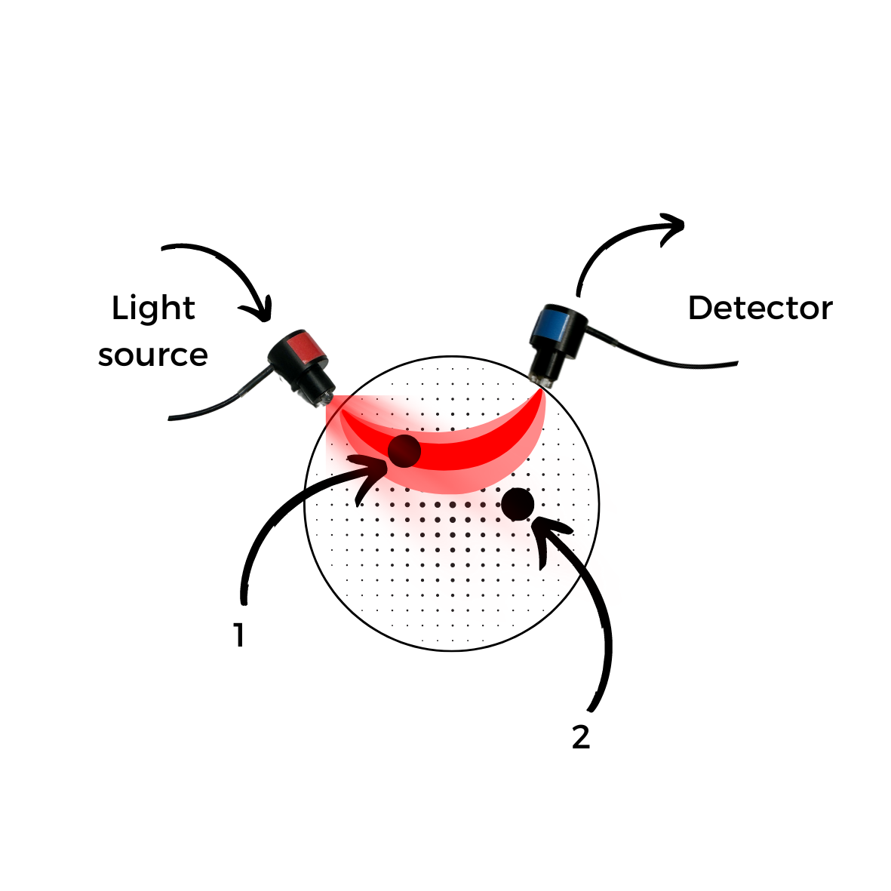
图 14｜fNIRS 的光源、探测器与组织敏感区域。 来源：第 6 讲第 83 页。保留课件原图，中文解释如下。
怎么看：Light source 是光源，Detector 是探测器，红色弯曲区域示意光在组织中的传播和测量敏感范围。它不是一条从光源直线打到一个神经元再返回的光线。
说明什么：通过不同波长吸收的变化，估计血红蛋白相关量。由于组织散射与浅表贡献，头皮上的测量同时需要考虑头皮和脑表面的影响。
别误读：图没有给出完整层次与定量深度，不能据图断言某个光源—探测器间距一定精准测到特定深度。
6.7 MRI 的三组硬件如何合作
主磁场 B0 建立稳定的磁化背景；射频线圈发射激发脉冲并接收磁共振信号；梯度线圈让磁场随位置有控制地改变，从而给不同位置附上不同相位或频率编码。接收线圈得到的是多个位置贡献的叠加信号，空间信息需要重建解开。
可以把梯度理解为给不同位置“加上可区分的编码”，而不是相机逐点拍照。傅里叶重建把 k 空间编码转换成空间图像。k 空间中心附近反映较缓慢的空间变化，外围包含更细的空间变化；截掉高空间频率会损失细节。
6.8 BOLD 的正向变化为什么不等于耗氧减少
神经活动增加时可能先增加耗氧，但随后血流补偿会带来更多氧合血液。典型正 BOLD 响应中，脱氧血红蛋白的相对影响减小，局部去相位减弱，相应 T2* 加权信号增加。解释对象是整条神经—血管耦合链，而不是“越工作，血里氧越少，所以 MRI 越亮”这样的单步推断。
HRF 把一次短暂事件变成持续数秒的响应。两个时间接近的事件可能叠加，因此事件发生时间、HRF 假设和实验设计一起决定可辨认性。图像每隔多久采一次是仪器参数，不能替代生理模型。
6.9 PET 符合探测与 fNIRS 光路
PET 探测的是湮灭后近乎相反方向的两个光子，符合探测确定可能的来源线；大量事件共同支持重建。单个事件不能直接精确指定某个神经元。核素决定衰变特性，所标记分子及其体内行为决定生理解释，两层都要交代。
fNIRS 的光在组织中散射，从光源到探测器不是笔直穿过一个脑点。测量对浅表组织也敏感，改变光源—探测器距离会改变敏感区域。血红蛋白浓度变化估计需要光吸收模型；“探测器放在额头”不等于只测前额叶、完全排除了头皮。
第 7 讲｜EEG、MEG、ECoG、微电极
核心问题：同样源于神经电活动，为什么记录结果差别这么大？
7.1 EEG 与参考
电压是两个位置的电位差：V=V记录−V参考。换参考可能改变波形和分布，分析时应知道参考方案。10–20 系统用头部标志点和比例安排电极；电极名不是神经元名字。
头皮 EEG 主要反映大量神经元同步突触活动产生的综合场。头部组织使多个来源在传感器上混合；因此“电极位于某区域上方”不等于“它只记录该区域”。
7.2 频段速记
以下只是常见近似边界，不同研究会调整：δ 约 0.5–4 Hz，θ 约 4–8 Hz，α 约 8–13 Hz，β 约 13–30 Hz，γ 通常指 30 Hz 以上的一段范围。
频段与脑状态存在统计关系，但没有一一对应的“思想字典”。看到 α 增强不能直接断言某人处于一种唯一心理状态；高频 EEG 尤其应检查肌电。
7.3 伪迹
| 来源 | 常见问题 | 判断重点 |
|---|---|---|
| 眼动/眨眼 | 眼电混入 EEG | 是否与任务或标签同步？ |
| 咬牙/面部肌肉 | 肌电成分较强 | 模型是否靠肌肉区分类别？ |
| 工频/接触不良 | 周期噪声、漂移、饱和 | 硬件、参考、电极接触和滤波设置 |
| 头部运动 | 接触改变、多种伪迹叠加 | 是否只在某一类试验发生？ |
你之前的判断“模型可能学到了咬牙，而不是左手”很关键。数据干净与否，要根据记录及对照判断，不能由准确率倒推。
7.4 MEG 与 EEG
两者都反映神经电流来源，但测量的物理量和对来源方向的敏感性不同。MEG 记录的是磁场信号，通常也随时间变化；不能因为强调“磁场”而说它不测变化。
MEG 的磁场相较电位受组织电导率边界的影响较小，但并非完全没有定位困难。SQUID 或 OPM 是传感技术；环境噪声抑制依然重要。EEG/MEG 源定位都是需要模型和假设的逆问题。
7.5 ECoG 与皮层内记录
ECoG 电极在皮层表面；皮层内微电极进入组织。ECoG 通常记录群体电活动，微电极还可捕获局部尖峰。
- 一个微电极可能记录多个神经元；一个神经元也可能被多个邻近电极观察到。
- 尖峰分选依据波形等信息区分可能的神经元来源，不是电极与神经元天然一一对应。
- 植入后的组织反应、包裹、电极微移和局部神经元变化都可能引起信号变化。
这一讲要会说：“记录位置决定我们能看到什么，但传感器通道不等于独立神经来源。”
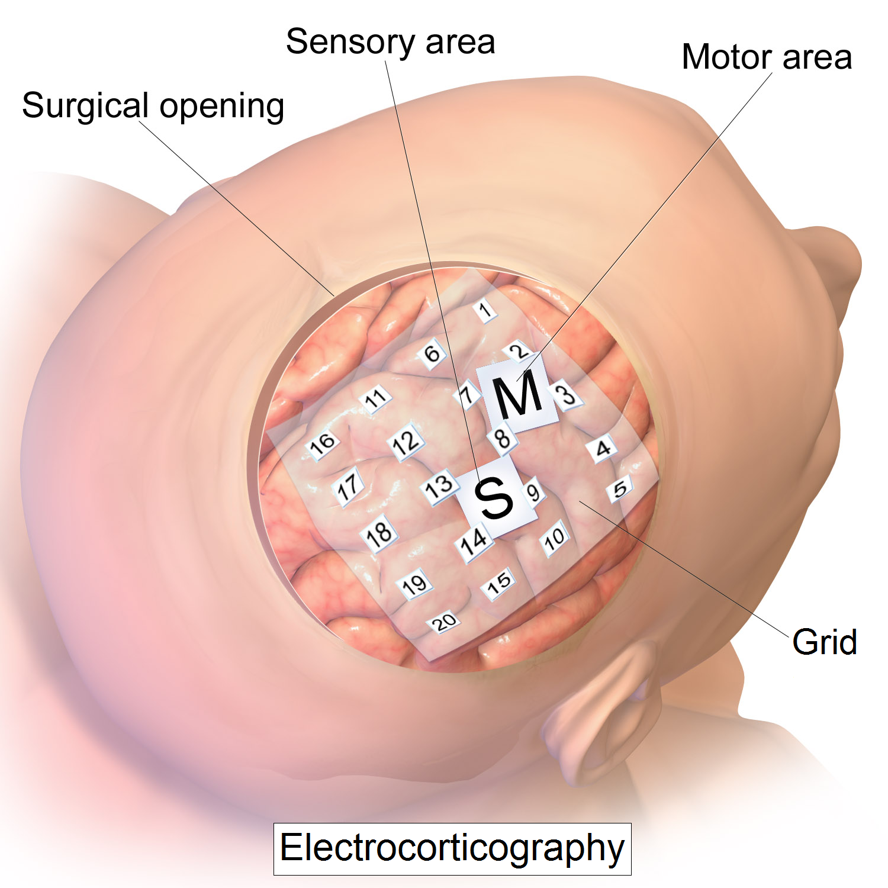
图 15｜ECoG 电极位于皮层表面。 来源：第 7 讲第 59 页。保留课件原图，中文解释如下。
怎么看：图中网格覆盖脑表面，标注展示感觉区与运动区的相对位置；网格上的编号是电极编号。先看“放在哪里”，再理解它与头皮 EEG 的区别。
说明什么：电极更接近皮层来源，减少了颅骨介于来源和电极之间的影响，但需要手术进入相应位置。网格覆盖范围决定了可观察区域。
别误读：一个网格电极仍可接收群体活动，不是一个编号对应一个神经元；图示位置也不是所有 ECoG 实验统一的布局。
7.6 为什么参考与体积传导会影响结论
假设记录电极电位为 12 μV、参考为 5 μV，输出是 7 μV。参考自身变成 8 μV，即使记录电极电位不变，输出也变成 4 μV。因此分析的是相对电位，不能把一个通道变化一律解释为它下方来源的独立变化。
同一神经来源可以影响多个头皮通道，两个通道相关不一定代表两个脑区正在直接通信。研究功能连接时，需要考虑共同来源、参考与体积传导，而不只是计算相关系数。
7.7 源定位是逆问题
正问题是给定脑内来源，预测传感器会测到什么；逆问题是从有限传感器数据推断脑内来源。不同来源组合可能产生相似观测，所以源定位需要头模型、来源假设和约束。增加通道可能增加信息，却不能自动消除不适定性。
课件提到 MEG 的波束形成、最小范数等方法，可理解为采用不同约束选择一个合理来源解释。结果受模型影响，不是传感器直接读出了一个绝对精确的坐标。
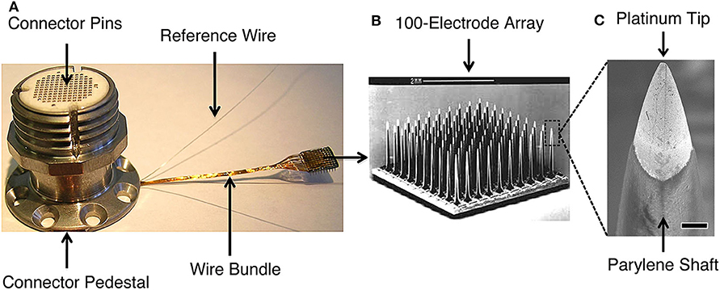
图 16｜皮层内阵列：连接器、针阵列和电极尖端。 来源：第 7 讲第 82 页。保留课件原图，中文解释如下。
怎么看：从左到右是连接结构、阵列与尖端的放大视图。针状电极进入组织，与上一幅铺在皮层表面的网格具有不同几何形态。
说明什么：靠近局部细胞使它能够观察更局部的电活动，也带来组织反应和长期稳定性问题。微电极阵列图帮助理解第一讲时空分辨图中靠近神经元尺度的来源。
别误读：阵列有多少针不等于稳定记录了多少独立神经元；尖峰来源需要分析，一根电极可能含多个细胞贡献。
7.8 植入长期稳定性与课件应用案例
课件用皮层表面记录介绍沟通、外骨骼控制、视觉与语音研究，关键是任务需求和电极覆盖区相匹配。电极没有覆盖某个区域时，不能因为模型强大就假设信息必定存在。
微电极进入组织可能引起血脑屏障损伤、胶质细胞反应、包裹和局部细胞变化，使原来可用的通道逐渐不同。不是所有变化都能靠加大增益解决：来源结构变化会改变输入与动作之间的对应关系，连接到第五讲的跨天适应问题。
第 8 讲｜读论文、写作与汇报
核心问题：如何把一篇论文变成自己能解释、能质疑、能继续做的研究？
8.1 论文各部分的任务
| 部分 | 阅读目标 |
|---|---|
| 摘要 | 问题、方法、新意、结果各是什么？ |
| 引言 | 为什么重要，已有方法哪里不足？ |
| 相关工作/理论 | 本文依赖哪些概念，与谁比较？ |
| 方法 | 数据如何来，模型如何训练，实验如何验证？ |
| 结果 | 图表真正显示了什么？ |
| 讨论 | 结果意味着什么，什么情况下可能失败？ |
| 结论 | 最终能支持哪一个范围明确的结论？ |
阅读顺序可以是摘要与引言 → 关键图和结果 → 讨论局限 → 方法细节。不要在不知道问题时先逐符号啃完整推导。写作时应早拟问题和实验提纲，摘要通常最后写；不能先决定结果，再挑数据证明它。
8.2 每篇论文固定记录八项
- 一句话研究问题。
- 受试者、采集方式、实验任务与数据规模。
- 模型输入的形状、单位和预处理。
- 输出是什么，训练标签来自哪里。
- 相比基线真正改了什么。
- 训练/验证/测试按什么单位隔离。
- 最重要结果及其条件。
- 局限、可能混杂与下一步实验。
8.3 泛化与泄漏的关键检查
同一次记录中新片段、同一个人新一天、完全新的人、完全新类别，分别是不同测试。样本划分单位必须与结论匹配。
相邻或重叠窗口分到训练与测试可能造成强相关；同人随机分片不能直接证明跨人能力。标准化等需要估计的步骤原则上只用训练侧拟合；有意使用测试域无标签数据做适应时，应明确协议，不能假装完全没接触过测试域。
还有刺激泄漏：相同图片、同一个刺激序列或同一区块的背景变化，可能跨越训练与测试。要看模型是在识别目标神经反应，还是记住记录条件。
8.4 读指标要带上分母和比较对象
从 70% 提高到 78%，是提高 8 个百分点；相对提升约为 8/70=11.4%。不能只写“提高 8%”。
总体准确率受类别比例影响。若 90% 样本属于 A，永远猜 A 也有 90% 准确率；此时需要看混淆矩阵、各类召回率等。统计显著不等于提升足够有用，没显著也不等于已经证明两模型相同。
消融实验是去掉或替换模块，检查该模块的贡献。比较应尽量控制数据划分、训练预算等条件；多次运行与个体差异也值得报告。
8.5 写论文、提案和做报告的区别
论文报告已经完成的方法与证据；提案说明准备研究的问题、可行的方法及如何判定成功。不能把预期结果写成已经验证的事实。课件建议在实验前先列论文提纲，这样可以发现哪些对照、指标和条件还没有设计。
摘要虽然出现在最前面，往往最后写，因为它需要准确覆盖真实问题、实际方法和最终结果。结果部分说明图表显示的事实；讨论部分解释为什么会出现这些结果，以及其他可能解释。不要只在讨论里重复一次数值。
做报告先判断听众背景，再安排重点；一页图必须能说清横轴、纵轴、比较对象和它支持的结论。比如跨天准确率图，横轴若是相隔天数，下降说明时间间隔相关的退化；若横轴是训练迭代，则含义完全不同。课件强调优先讲重要信息，避免把演讲时间耗在无关背景。
8.6 从课件范例理解研究计划
后续课件的提案范例包括 EEG 分类、fMRI 视觉对象分类、伪迹识别等。它们共有的结构是：明确问题 → 指定数据和标签 → 提出基线与改进 → 设计独立测试 → 分析结果。疾病分类只是任务例子，不能把课堂提案当成已经验证的诊断系统。
以“构造空间提高信号可分性”为例，先明确要分的是左右手、图片类别还是其他目标；再固定数据划分，比较原始特征、已有表示和新表示。若同时改采样、划分、分类器和训练时长，就难以解释提升到底来自哪里。提案需要说明这一因果比较，而不是只列一个复杂模型名字。
第 9 讲｜硬件、电路与 TinyML
核心问题：微伏级信号怎样变成稳定的数据，模型怎样在有限资源中运行？
9.1 EEG 硬件链路
电极 → 输入保护 → 仪表放大器 → 模拟滤波/增益 → ADC → MCU/DSP/FPGA → 通信或本地推理 → 输出。
实际设备可能集成多级功能，顺序与实现也会不同。这是理解职责的框架，不是所有设备的唯一电路。
| 环节 | 作用 | 最易误解的点 |
|---|---|---|
| 高输入阻抗前端 | 尽量少扰动被测信号 | 不等于信号来源本身没有阻抗 |
| 低噪声放大器 | 放大小差分信号，减少额外噪声 | 放大本身不自动提高输入信噪比 |
| 共模抑制 | 抑制多个输入共同携带的干扰 | 共模干扰和差分信号不同 |
| 偏置/DRL 类电路 | 帮助控制身体共模电位 | 不是用来刺激大脑解码意图 |
| 模拟滤波 | 限带、控制漂移与混叠风险 | 采样后滤波不能完全替代它 |
| ADC | 把模拟输入转换为数字样本 | 采样率与位数是不同规格 |
| 处理器 | 数字滤波、特征、推理、通信 | 不一定所有模型都能放进去 |
9.2 增益、噪声、量化
信号和噪声都乘同一个倍数，二者比值不变。前置增益仍有价值：让微弱信号合理占据 ADC 量程，并降低后续量化/后级噪声的相对影响；但过大可能饱和。
理想 b 位 ADC 有 2^b 个编码等级，量化步长约为输入范围宽度/2^b。真实有效精度还受噪声、非线性等限制，24 位并不保证 24 位有效信息。
未压缩有效载荷数据率约为：通道数×采样率×每样本位数。例：8×250×24=48000 bit/s=6000 byte/s；真实传输还含时间戳、包头等开销。
9.3 端侧运行与延迟
TinyML 将模型部署在内存、算力、功耗受限的小型设备中。训练可在大计算机完成，推理放到设备上；不是必须在微控制器上从零训练。
端到端延迟包含采集窗口、缓冲、滤波、传输、推理和执行器响应。模型推理只有 10 ms，也不能抹掉之前等待 1 秒信号窗口的时间。实时系统需要足够及时且稳定，不要求数学意义的零延迟。
9.4 四种压缩思路
| 方法 | 做什么 | 限制 |
|---|---|---|
| 剪枝 | 删除部分权重、通道或结构 | 置零不一定缩小文件或提速，需要实现支持 |
| 量化 | 用更低位宽数值表示权重/激活 | 有舍入与截断误差，效果要测 |
| 蒸馏 | 小学生模型学习大教师的输出/特征 | 不是直接复制参数，小模型仍需训练 |
| 码本/共享表示 | 用索引引用共同数值等 | 要计入码本、索引与解码开销 |
FP32 换 INT8，若参数数目相同，纯权重存储理论上约为四分之一；不保证完整程序、RAM 或延迟也变成四分之一。量化可能改变准确率，硬件支持决定能否加速。
PTQ 是训练后量化；QAT 在训练中模拟量化影响以提高适应性。结构化剪枝通常更容易映射到普通硬件；稀疏权重若仍用密集运算，可能没有速度收益。
常见线性量化概念式：q=clip(round(r/S)+Z)，反量化约为 r≈S(q−Z)。r 是原数，S 是步长，Z 是零点，clip 把结果限制在整数范围。只需先理解“用有限格子近似连续数值”。
9.5 用一个量程例子理解模拟前端
假设目标信号只有几十微伏，而 ADC 可接受的范围宽得多。适当增益把信号放大到合理范围，可以让有限量化等级更有效地描述它。但若大幅眼电或电极直流偏置也被放大，输出可能撞到量程边界而削顶。削顶以后，数字滤波无法恢复已经丢失的峰值。
高输入阻抗用于减少测量电路对来源的负载；高共模抑制用于让两个输入共同携带的干扰尽量不进入差分输出。两者职责不同，不能简单归结为“放大器越强越好”。
9.6 量化的具体数字
教学例子：用步长 S=0.1、零点 Z=0 的整数表示，原数 0.26 经 round(0.26/0.1) 得到 3，恢复约为 0.3，产生 0.04 的误差。如果范围之外被截断，误差可能更大。位数少意味着能表示的格子有限，格子的覆盖范围与精细程度需要权衡。
不同层或通道数值范围不同，共用一个步长可能使较小数值挤在少量等级里。逐通道量化给予不同通道不同尺度，可能更准确，但部署支持和额外参数也要考虑。量化目标既可以是权重，也可以是激活；只改权重，不代表整个推理过程都改为整数。
9.7 剪枝、稀疏、码本和蒸馏不是一回事
把单个权重置零形成非结构化稀疏；删除整个通道或规则块形成更易利用的结构。存储仍保留全部零值、计算仍做密集矩阵乘法时，理论稀疏度不会自动变成加速。
码本方法把多个数用一个代表值替代，并保存索引。课件举 K-means：若有 16 个代表值，索引理论上需 4 bit，但还要保存代表值本身。它可以节省权重存储，计算时却仍可能查表还原成浮点数，因此不必然降低算术精度或运算成本。
蒸馏让学生学习教师的软输出或中间特征。例如教师认为某样本 0.7 像 A、0.25 像 B、0.05 像 C，比只有“A”这个标签多提供了类别相似性信息。离线蒸馏先固定教师；在线蒸馏可让模型共同训练。教师可以很大或由多个模型组成，部署时只留下学生。
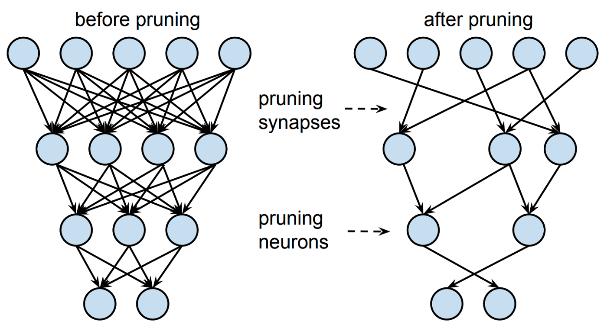
图 17｜剪枝：删除连接与删除整个神经元。 来源：第 9 讲第 71 页。保留课件原图，中文解释如下。
怎么看：左侧是剪枝前网络，右侧是减少连接和节点后的网络。连线代表参数关系，圆点代表人工网络单元，不是切除真实脑组织。
说明什么：删单个权重与删整组结构对计算实现的影响不同。图帮助理解为什么剪枝不仅是减少数值位数：量化改变表示精度，剪枝改变保留的连接或结构。
别误读：即使很多权重为零，若仍采用密集存储和计算，也不一定减少文件大小或推理时间；加速要看实际实现。
9.8 电路响应时间与实时系统
电容储存电荷、电路具有频率响应，输入突变后输出不一定瞬间达到新值。用简单 RC 电路作说明，时间常数 τ=RC 决定充放电的变化速度；它与通信距离导致的传播时间不是同一来源。滤波器还可能带来群延迟，滑动窗带来等待时间，执行器也需要响应时间。
系统性能应在真实设备上测量，包括最坏延迟、丢包、缓冲与功耗。课件展示的某个芯片或旧设备参数只是实例，不应当作今天所有嵌入式系统的共同规格。
第 10 讲｜闭环、自适应与未来
核心问题：怎样让系统在真实环境中长期可用？
10.1 小模型仍然重要
频段功率、放电率等特征配上线性回归、LDA 或动态状态估计，可以形成低开销基线。课件也提到 CSP：它是一类利用多通道统计特征学习空间滤波的经典方法。理解其用途比先背矩阵推导更重要。
深度学习能够学习复杂表示，但需要数据与合适验证。经典方法和深度模型应在同样的数据划分下比较，不能预设复杂模型一定更好。
10.2 非平稳与持续适应
日常系统面临疲劳、注意、环境噪声、电极移动与用户策略变化。静态解码器可能失效，研究方向包括迁移学习、域适应、自监督学习与持续更新。
持续更新也有代价：错误预测若被当成标签反复学习，可能越学越偏。需要监测、可信反馈、适当校准以及必要时回退；“在线更新”不是自动解决所有漂移。
10.3 人机共同适应
用户学会更适合解码器的策略，解码器也适应用户，形成共同学习。强化学习可利用奖励优化行动；错误相关电位可能提供用户感知错误的线索，但不是每次出错都能可靠检测。
闭环神经刺激依据当前记录调整刺激参数。它与只离线预测类别相比，还要关心闭环稳定性、反馈延迟与行动后果。
10.4 未来研究如何落地
评价维度不只有准确率，还包括：校准耗时、跨天性能、跨人性能、延迟、功耗、佩戴体验、失败率、隐私与自主控制。课件对未来 5 年/10 年的预测属于展望，不应记成已确认事实。
与老师方向的连接：学习一个既保留任务信息、又减少无关个体/日期差异的表示，是有意义的问题。但不能把所有个体差异一概删除：有些差异可能携带完成任务所必需的信息。
10.5 自适应系统怎样评价
离线测试可用新日期的数据检查退化；在线测试还需观察用户完成目标的时间、失败次数和控制稳定性。自适应方法必须与不适应、简单重新校准等基线比较，否则不能判断复杂更新是否值得。
评估时要说明新一天允许用哪些信息：完全不接触测试域、使用无标签校准片段、使用少量动作标签，是不同难度。每次实验都用真实测试标签调参，再称为“无监督适应”，会混淆协议。
10.6 共享控制与自主性
AI 可以利用环境信息协助用户，例如脑信号给出大致目标，设备自动完成部分路径或抓取细节。这样可能改善实际任务成功率，但成功动作不再完全由神经信号逐细节指定。报告应明确用户控制了什么、自动系统补全了什么。
这与第五讲语言模型纠错和图像生成有共同问题：先验与自动补全可以有用，但需要保留使用者修正和拒绝的能力。评价不能只有输出看起来是否自然，还要看它是否符合用户真实目标。
来源与范围
修订版：2026-10-12。十讲原始文件位于 D:/脑机接口/国际化课程/。下面页码为幻灯片顺序，供回查：
| 来源 | 重点回查页 |
|---|---|
| lecture_01 (8).pptx | 7–18、21–42：定义、测量方式、接口与 AI |
| lecture_02.pptx | 30–34、39–55、59–83：学习方式、模型、任务 |
| lecture_03 (1).pptx | 9–49：信号、系统、能量、卷积、傅里叶、采样 |
| lecture_04 (1).pptx | 25–49：神经元、可塑性、动作电位与 ERP |
| lecture_05 (1).pptx | 3–64：序列解码、生成模型、跨天对齐；45–53 页需结合勘误 |
| lecture_06 (1).pptx | 9–53、55–78、80–99：MRI/BOLD、PET、fNIRS |
| lecture_07 (1).pptx | 3–27、34–55、58–90：EEG、MEG、ECoG、微电极 |
| lecture_08 (1).pptx | 6–26、28–36：读写论文与汇报 |
| lecture_09.pptx | 3–26、29–106、108–112：采集链、TinyML、压缩、提案 |
| lecture_10.pptx | 29–58、60–66：部署、自适应、研究提案 |
第五讲的六篇论文均已给出原文链接，并回查了课件图片中的论文题名。手写、语音和对齐实验的主要内容依据课件；综述简介依据原文补充，具体概念另配教学解释。图像重建勘误依据此前已核对的原论文及本地中文译文。这里只对学习所需的关键概念做校正，不代表对十份课件中的全部历史、产品规格和引用进行了独立事实核查。旧课件的行业预测与设备参数不作为当前事实使用。